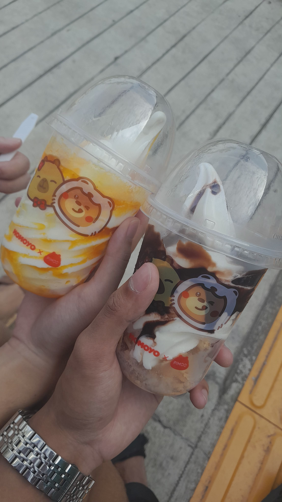

After our online class with Ma'am Jevah, me and my friends started planning to eat together tomorrow for lunch. So me and Elaine went to the farmer's market to buy veggies to cook.
Palengke Run
Right after our online class ended, we headed straight to the farmer's market (palengke) to get ingredients for tomorrow's lunch. We're planning to cook with friends, so we needed fresh vegetables. The market was busy but we managed to find everything we needed – tomatoes, onions, eggplants, and some other veggies.
It's always an adventure going to the palengke. The energy, the vendors calling out, the smell of fresh produce. We didn't stay too long though – just got what we needed and headed out.
Ice Cream Break
After the palengke, we decided to treat ourselves and got some ice cream. Nothing fancy, just a simple stop to cool down after walking around the market under the heat. We sat for a bit, ate our ice cream, and talked about the plan for tomorrow's lunch. Simple moments like these are always nice.

Fable: The Lost Chapters
When I got home, I booted up Fable: The Lost Chapters. It's been a while since I played, and it felt good to dive back into Albion. I spent a couple of hours just exploring, doing side quests, and getting lost in the world. The music, the atmosphere, the choices – it's comfort gaming at its finest after a productive day.
Palengke run, ice cream, and Fable at night. Simple day, good day.
Looking forward to tomorrow's lunch with everyone. For now, time to rest.
— CJ